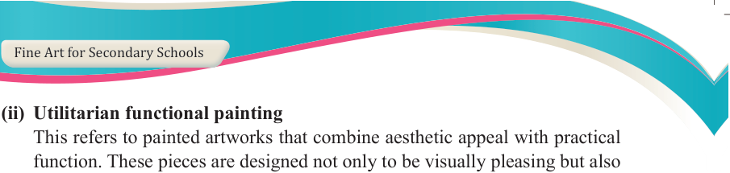
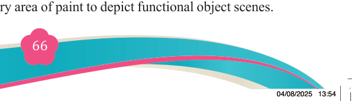
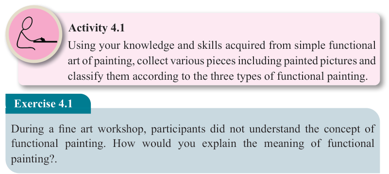

Fine Art for Secondary Schools

66

Student’s Book Form Two

(ii) Utilitarian functional painting

This refers to painted artworks that combine aesthetic appeal with practical function. These pieces are designed not only to be visually pleasing but also
to serve a useful purpose in daily life. Examples include decorated water jugs,

trays, chairs, and other commonly used household items.
(iii) Conceptual functional painting
These paintings, often referred to as concept art or conceptual designs, serve as the initial visual representation of an idea or concept. They function as blueprints, guiding the development and refinement of projects in various fields such as entertainment, product design, and advertising.
Significance of simple functional painting
Functional paintings are significant in nature, as they bring the world to life.
Through various creative processes, images come to reality when artists or even scientists work to make their ideas tangible. Painting is an art form which creates
and portrays different functional and non-functional images. Functional paintings
serve as visual representations of history, culture, and identity something that
cannot easily be captured through other means.
Activity 4.1
Using your knowledge and skills acquired from simple functional art of painting, collect various pieces including painted pictures and classify them according to the three types of functional painting.
Exercise 4.1
During a fine art workshop, participants did not understand the concept of functional painting. How would you explain the meaning of functional painting?.
Technique of simple functional painting
Simple painting technique is a fundamental to the creation of any artwork. The elements of art and the principles of design are essential tools for fulfilling the
objectives of the intended piece. Simple functional painting uses the same elements
and principles of design, though in some cases, it differs slightly based on the type
of artwork, its purpose and how it is intended to be used.
Simple functional painting can be done in various technique and media. In this chapter, you will learn simple painting from memory technique by using acrylic
paint onto a dry paper or onto a dry area of paint to depict functional object scenes.
04/08/2025 13:54